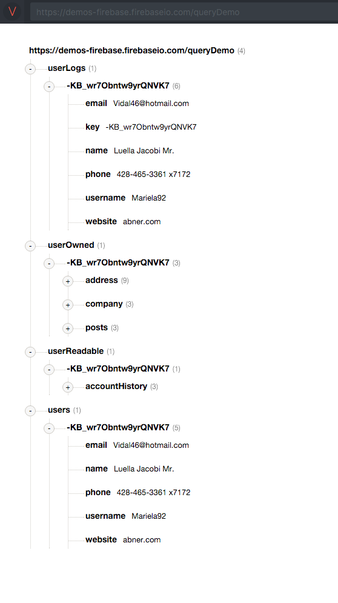

**UPDATE 6/30/2016: **I’ve published my free class, Firebase 3.0 for Web. Check it out.
Example Data

The above example data breaks up user data into /userLogs, /userOwned, /userReadable and /users
Notice that all of the user data is then nested under a single user key, **-**KB_wr7Obntw9yrQNVK7. This way I can use a single user key to access all of the relevant user data.
Security rules cascade
If you grant read or write privileges to a user on any node, you automatically grant that user read or write privileges on all child nodes. This is a consequence of how Firebase maintains performant reads and writes.
If you ask to read a node for which you have read permission, Firebase will return the entire node and all of its children. The Firebase servers don’t have time to go parsing through and deleting bits and pieces of the node based on nested security rules.
The same thing goes for writes. If you’re allowed to write to a node, you’re allowed to overwrite everything. It would be unreasonable to expect Firebase to preserve some nodes based on nested security rules.
Cascading security rules are not a problem. Just structure your data according to the privileges that you want to grant, and all will be well. You’ll find yourself writing much simpler security rules.
Use Bolt. Don’t try to do security rules by hand.
The Firebase team recently release a security rule generator named Bolt. It’s labelled as experimental, but you can easily review the rules that it creates, and I’ve been using it in production for a while. It’s slick. Here are some example rules for the above data structure.
The matchUserKey() function assumes that I have an access control list (ACL) with a list of Firebase Authentication-provided uids that map to user keys. The ACL could look like this:
{“acl”: {“facebook:1234567890”: {“userKey”: “**-**KB_wr7Obntw9yrQNVK7”, “created”: “2016–02–29”, “someOtherNode”: … }}}
The authed user in this case has facebook:1234567890 as a uid, and my server process would have created the user and the uid-to-userKey mapping entry on the /acl node.
Nest data according to security rules
By nesting data as explained, I’ve trimmed my security rules down to the bare minimum. When I want to create a type of user-readable node, I just add it under the user. For instance, I could create /userReadable/-KB_wr7Obntw9yrQNVK7/transactions to allow the user to read his or her transactions. I wouldn’t need to write a new rule for this node, because it will simply inherit the cascading rule I that wrote for /userReadable/-KB_wr7Obntw9yrQNVK7.
It’s ok! Get fancy.
This little trick with the ACL entry will let you get fancy. Check out this rule:
isAdmin() = true == root.child(‘queryDemo’).child(‘users’).child(root.child(‘queryDemo’).child(‘acl’).child(auth.uid).child(‘userKey’).val()).child(‘isAdmin’).val();
This sucker looks at /queryDemo/users/… then uses the ACL to reach down and find the userKey… and uses the userKey to check /queryDemo/users/<userKey>/isAdmin to see if the node equals true.
I sprinkle my isAdmin() function throughout my security rules to grant admin users read/write. I have an isModerator() function as well that’s nearly identical.
Read up on Firebase’s excellent security rules docs and imagine the possibilities! 👯 🍕 🍾
As always…
I love to talk Firebase. Hit me up in the comments, on Twitter or on the new Firebase Slack Channel 😍. I’ve tried to keep these examples simple. I know this stuff can get much more sophisticated, so hit me up with your nastiest questions and I’ll do my best.